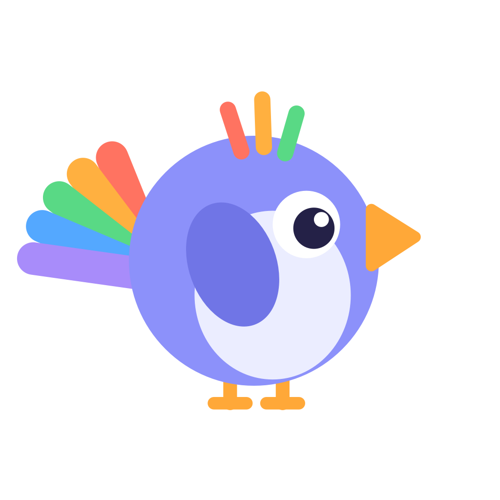
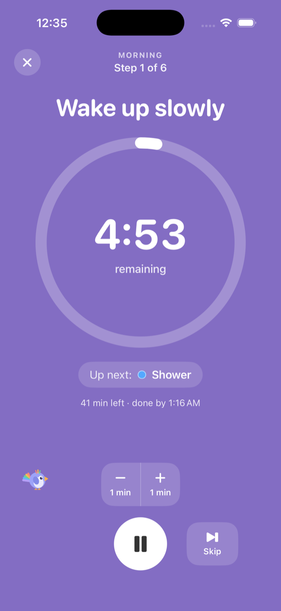
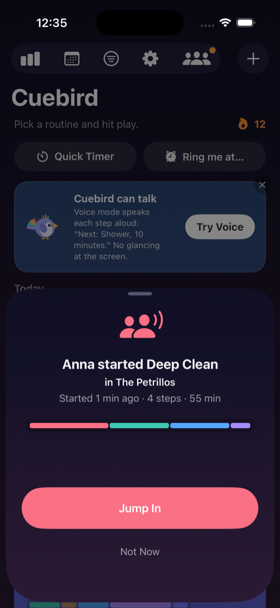

Routines for brains that don't feel time.
Small timed steps. The whole screen becomes the color of what you're doing.
Download on the App Store · $0.99
Glanceable from across the room. Real alarms start you. Skip, pause, or take a minute back. No shame.

Link the people you live with into a household. Start a routine and everyone gets a gentle offer to jump in, right where you already are. Sitting it out is silent.
Real alarms, not notifications. A start time rings through silent mode and Focus, even with the app closed, and puts you straight into the routine.
A voice if you want one. Spoken steps and a 30-second heads-up, or a chime, or quiet. You can record a step in your own voice; recordings stay on your device and never sync.
It learns your real timing. Cuebird notices how long a morning actually takes, which steps run over, and which you skip, then updates the plan in one tap.
Most of this update is about the gap between deciding to start and actually starting, and about the app knowing what else is going on around your routine.
Start without opening the app. A widget on the Home Screen, a control on the Lock Screen, and one in Control Center. Tap it and the routine is already running.
Begin from a ready-made routine. A morning, a wind-down, a leaving-the-house. Change what does not fit. Staring at an empty routine is its own kind of stuck.
Watch the color drain. The step's color empties as its time does, so what is left is a shape rather than a number you have to read and convert.
Told before you are late. Turn on calendar awareness and a routine that will not finish before your next meeting says so, on the routine and again while you run it. Tap the line to see the meeting without leaving the timer.
A wind-down that knows your nights. With Health turned on, a wind-down shows the time you usually fall asleep next to when it would finish, so bedtime is a fact rather than a guess.
Rain, waves, or brown noise. Built in, optional, and they step aside for your own music and come back when it stops.
On the nightstand and on your wrist. A big StandBy face while the phone charges sideways, Double Tap on Apple Watch, and a Focus filter so your routines follow whichever Focus you are in.
One-time purchase. Family Sharing covers up to six people. No subscription, no ads, no accounts, no data collection. Your own routines sync through your private iCloud. Households stay end-to-end encrypted.